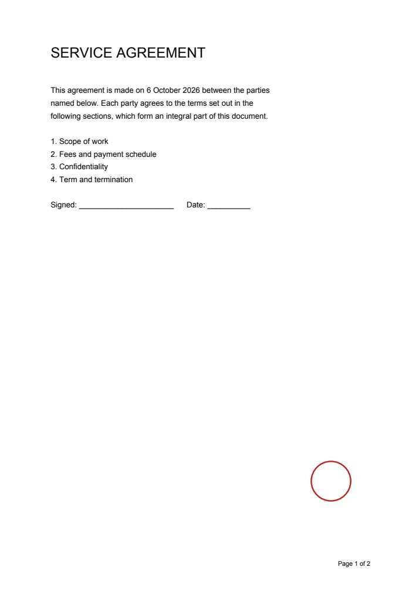
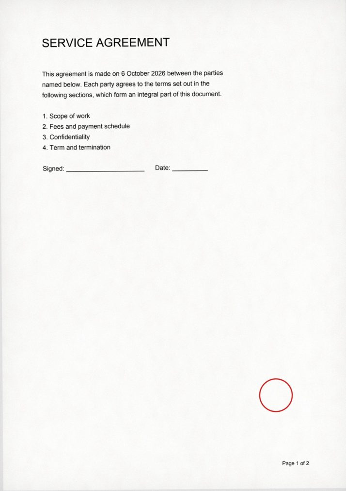

scannizer v0.1
원본이 필요 없는데도 굳이 출력해서 스캔하고 계신가요?
scannizer는 깨끗한 PDF를 실제 스캐너를 거친 것처럼 바꿔 줍니다. 종이 질감, 미세한 기울기, 접힌 자국, 스캐너 그림자와 노이즈까지.
Still printing a PDF just to scan it back in when nobody needs the paper?
scannizer makes a clean PDF look like it went through a real scanner — paper texture, a slight tilt, fold creases, scanner shadow and sensor noise.
전 / 후
Before / After
가운데 손잡이를 좌우로 움직여 보세요. 왼쪽이 원본, 오른쪽이 scannizer 결과입니다.
Drag the handle. Left is the original PDF, right is scannizer's output.


설치와 사용
Install & use
pip install scannizer
scannizer 계약서.pdf # → 계약서_scanned.pdf
scannizer 계약서.pdf -o out.pdf --preset heavy --seed 42
scannizer 계약서.pdf --fold trifold --color gray --dpi 150Python에서도 같은 일을 할 수 있습니다.
The same thing from Python:
from scannizer import scan
scan("in.pdf", "out.pdf")
scan("in.pdf", "out.pdf", preset="heavy", seed=42)
scan("in.pdf", "out.pdf", fold="trifold", color="gray")무엇이 달라지나
What it does
📄 종이Paper
종이 결 질감과 약간 따뜻한 색조. 흰 종이는 여전히 흰색으로 보입니다.
Fibre texture and a slightly warm tint. White paper still reads as white.
📐 기울기 · 접힘Skew · folds
페이지마다 조금씩 다른 각도로 기울고, 반 접기나 편지 3단 접기 자국을 넣을 수 있습니다.
Every page tilts by a slightly different angle; optional half or trifold creases.
🔦 스캐너 광학Scanner optics
가장자리 그림자, 고르지 않은 조명, 미세한 블러, 센서 노이즈, JPEG 압축.
Edge shadow, uneven lighting, a touch of blur, sensor grain, JPEG compression.
🎲 재현 가능Reproducible
--seed를 주면 매번 같은 결과. 안 주면 매번 다른 결과.
Pass --seed for identical output; omit it and every run differs.
옵션
Options
프리셋 값 위에 어떤 옵션이든 덮어쓸 수 있습니다.
Any option overrides the preset value.
| option | 의미 | meaning | range |
|---|---|---|---|
--preset | light · normal · heavy | light · normal · heavy | |
--dpi | 렌더 해상도 | render resolution | 72–600 |
--color | color · gray · bw | color · gray · bw | |
--jpeg-quality | JPEG 품질 | JPEG quality | 1–95 |
--skew | 최대 기울기(도), 페이지마다 랜덤 | max tilt in degrees, random per page | 0–5 |
--fold | none · half · trifold | none · half · trifold | |
--fold-strength --noise --paper --edge-shadow --unevenness | 효과 강도 | effect strength | 0–1 |
--blur | 블러 시그마(px, 200 DPI 기준) | blur sigma in px at 200 DPI | 0–3 |
--seed | 난수 시드 | random seed |